Ranking - PvE
| Posição | Guardião | Classe | Tier |
|---|
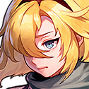
Build - Future Princess
{Buff de grupo: +40% de Vida Máxima}
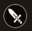
Controle Dimensional
Controle Dimensional:Quebrador de Dimensões: Causa dano à distância com um bastão ou causa dano corpo a corpo com bastão e escudo equipados. Escudo Dimensional: Provoca inimigos próximos e aumenta a Def dos membros do grupo próximos em 30% por 5 segundos.
Controle Dimensional:Quebrador de Dimensões: Causa dano à distância com um bastão ou causa dano corpo a corpo com bastão e escudo equipados. Escudo Dimensional: Provoca inimigos próximos e aumenta a Def dos membros do grupo próximos em 30% por 5 segundos.
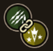
Tempestade de Tempo e Espaço(Hab. arma; Liberator):
Cria uma explosão de energia mágica que que aplica o debuff machucado ao inimigo e causa dano em área.
Barreira dimensional
Cria uma barreira para todos os membros do grupo que anula o dano de 3 ataque(s) de inimigos por 20 segundo(s), restaura 10% de HP.
Cria uma explosão de energia mágica que que aplica o debuff machucado ao inimigo e causa dano em área.
Barreira dimensional
Cria uma barreira para todos os membros do grupo que anula o dano de 3 ataque(s) de inimigos por 20 segundo(s), restaura 10% de HP.
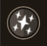
Passiva:
Ao atingir, aumenta a velocidade de movimento, a velocidade de regeneração da habilidade da arma e a velocidade de ataque do Quebrador de Dimensões em 20% por 2 segundos.
Ao atingir, aumenta a velocidade de movimento, a velocidade de regeneração da habilidade da arma e a velocidade de ataque do Quebrador de Dimensões em 20% por 2 segundos.
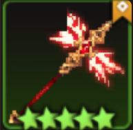
Arma EX - Liberator:
Ataca com feixes dimensionais que curam aliados em 2% do HP e têm chance de infligir dano bônus.
Ataca com feixes dimensionais que curam aliados em 2% do HP e têm chance de infligir dano bônus.
Equipamentos Recomendados (Best in Slot)
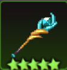
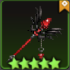
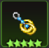
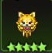
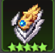
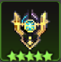
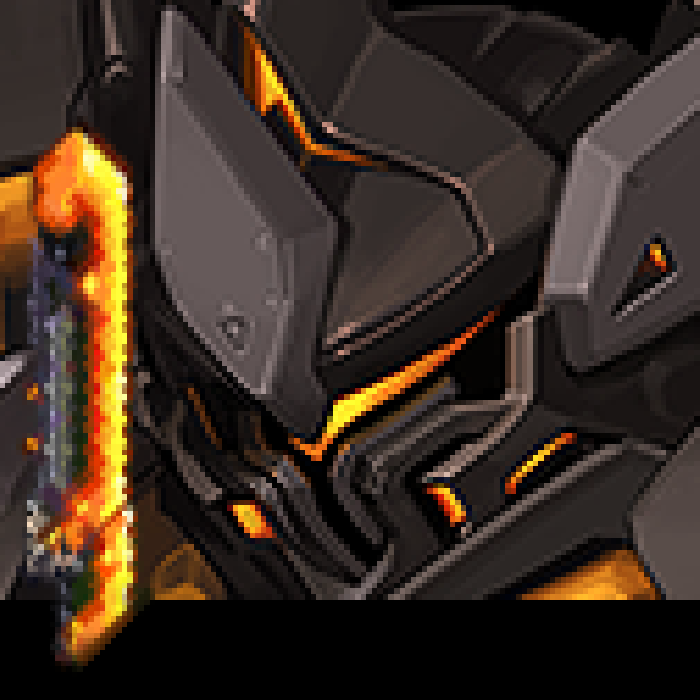
Build - Oghma
{Buff de grupo: +45% de Defesa}
Pilotagem Mecânica
Combo Canivete de Calor: Ataca os inimigos com o canivete de calor.
Escudo Tático: Provoca os inimigos ao redor e aumenta sua defesa em 50% por 3 segundos.
Combo Canivete de Calor: Ataca os inimigos com o canivete de calor.
Escudo Tático: Provoca os inimigos ao redor e aumenta sua defesa em 50% por 3 segundos.
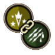
Campo de Pressão (Hab. Arma; Eckesachs):
Gera uma onda de choque contínua ao redor dos inimigos e aplica o debuff de "caído".
Foguete Múltiplo:
Lança vários foguetes para infligir dano à distância com 300% de DPS e reduzir o ataque do inimigo em 10% por 15 segundos.
Gera uma onda de choque contínua ao redor dos inimigos e aplica o debuff de "caído".
Foguete Múltiplo:
Lança vários foguetes para infligir dano à distância com 300% de DPS e reduzir o ataque do inimigo em 10% por 15 segundos.
Regulador de Defesa:
Aumenta a DEF de todos os aliados em 15% com base na diferença de DEF entre ele e os aliados (individualmente). Ideal para proteger o time.
Aumenta a DEF de todos os aliados em 15% com base na diferença de DEF entre ele e os aliados (individualmente). Ideal para proteger o time.
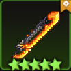
Arma EX - Eckesachs:
Reflete parte do dano infligido pelo inimigo com base na DEF do Oghma (o dano refletido não pode exceder o nível X 1500 de Eckesachs).
Reflete parte do dano infligido pelo inimigo com base na DEF do Oghma (o dano refletido não pode exceder o nível X 1500 de Eckesachs).
Equipamentos Recomendados (Best in Slot)
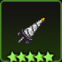
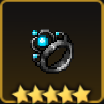
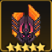
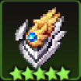
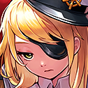
Build - Marina
{Buff de grupo: +40% de Vida maxima}
Orgulho Naval
Esgrima Naval: Corta os inimigos com um grande falchion. Puxar: Lança uma âncora e provoca inimigos distantes. Ela também pode puxar monstros fracos com a âncora.
Esgrima Naval: Corta os inimigos com um grande falchion. Puxar: Lança uma âncora e provoca inimigos distantes. Ela também pode puxar monstros fracos com a âncora.
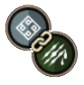
Bombardeamento Naval (Hab. arma; Armada):
Inicia uma barragem com disparos contínuos de sua frota, causando dano em área aos inimigos ao redor da Marina.
Benção do oceano:
Inflige 250% do DPS aos inimigos e cria um escudo de água de 20% ao redor de todos os membros do grupo.
Inicia uma barragem com disparos contínuos de sua frota, causando dano em área aos inimigos ao redor da Marina.
Benção do oceano:
Inflige 250% do DPS aos inimigos e cria um escudo de água de 20% ao redor de todos os membros do grupo.
Batalha Um a Um
Ao usar a Habilidade de Puxar, a Defensiva aumenta em 30% por 5 segundos.
Ao usar a Habilidade de Puxar, a Defensiva aumenta em 30% por 5 segundos.
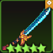
Arma EX - Armada:
Habilidade de Puxar inflige 150% do DPS a uma área mais ampla.
Habilidade de Puxar inflige 150% do DPS a uma área mais ampla.
Equipamentos Recomendados (Best in Slot)
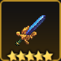

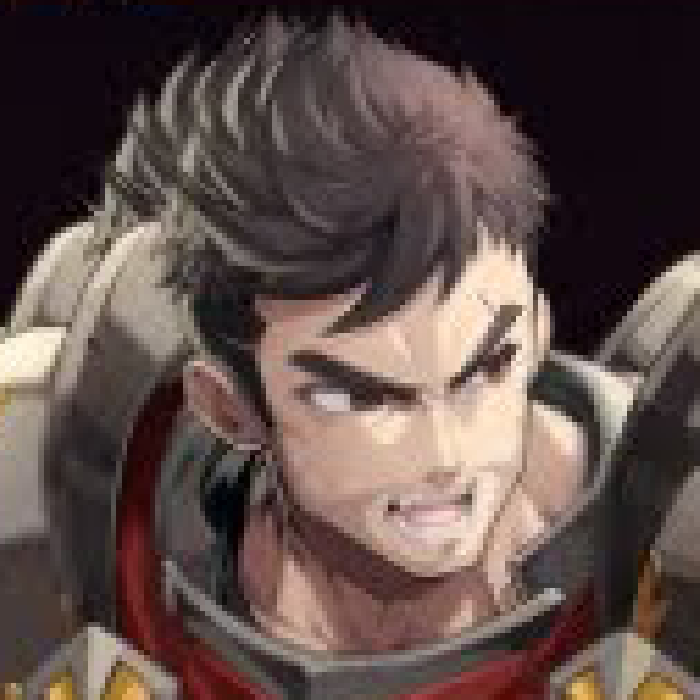
Build - Craig
{Buff de grupo: +48% de defesa}
Esgrima Protetora:
Esgrima e Escudo: Usa uma Espada de mão e um Escudo para causar dano corpo a corpo nos inimigos
Esgrima e Escudo: Usa uma Espada de mão e um Escudo para causar dano corpo a corpo nos inimigos
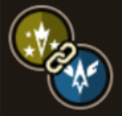
Ataque de Carga:
Corre rapidamente para o alvo e inflige dano em area. o dano aumenta proporcionalmente a DEF do inimigo e o coloca no estado caido.
Grito de Guerra
Invoca a luz divina para derrubar os inimigos e aumentar a resistência em 50% e o ATK em 10% dos aliados.
Corre rapidamente para o alvo e inflige dano em area. o dano aumenta proporcionalmente a DEF do inimigo e o coloca no estado caido.
Grito de Guerra
Invoca a luz divina para derrubar os inimigos e aumentar a resistência em 50% e o ATK em 10% dos aliados.
Proteção Camarada:
Recebe o dano de menbros do grupo com HP menor que 50%. ativando apenas quando o HP de craig estiver acima de 30%
Recebe o dano de menbros do grupo com HP menor que 50%. ativando apenas quando o HP de craig estiver acima de 30%
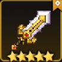
Arma EX - silence:
Quando atacado, causa dano corpo a corpo igual a 20% de poder de ataque por segundo e recupera 2% HP. O dano aumenta proporcialmente em relação a DEF do atacante. ativado a cada 2s.
Quando atacado, causa dano corpo a corpo igual a 20% de poder de ataque por segundo e recupera 2% HP. O dano aumenta proporcialmente em relação a DEF do atacante. ativado a cada 2s.
Equipamentos Recomendados (Best in Slot)
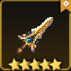
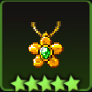
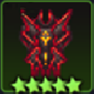
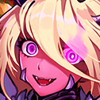
Build - Beth
{Buff de partido: 50% a mais de ataque corpo a corpo}
Esmagamento negro:
Inflige dano corpo a corpo aos inimigos com uma espada de duas mãos, infundida com mana. Prioriza seu ataque a rangeds ou inimigos distantes.
Inflige dano corpo a corpo aos inimigos com uma espada de duas mãos, infundida com mana. Prioriza seu ataque a rangeds ou inimigos distantes.
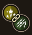
Ataque predador:
Salta no ar e bate a espada de duas mãos no chão, causando danos ao redor da área atingida. Deixa os inimigos em estado de caído.
Invasão negra
Condensa mana para causar 400% de dano à distância e aumentar seu atk corpo a corpo em 40% por 8 segundos.
Salta no ar e bate a espada de duas mãos no chão, causando danos ao redor da área atingida. Deixa os inimigos em estado de caído.
Invasão negra
Condensa mana para causar 400% de dano à distância e aumentar seu atk corpo a corpo em 40% por 8 segundos.
Instinto de batalha:
Dependendo do número de inimigos dentro de 3 azulejos, o Ataque aumenta em 15% até 60% e anula o dano recebido em 15% até 60%.
Dependendo do número de inimigos dentro de 3 azulejos, o Ataque aumenta em 15% até 60% e anula o dano recebido em 15% até 60%.
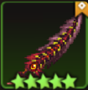
Arma EX - Predator:
No golpe de Dark Smash, diminui a resistência do tipo Sombrio em 20% por 3 segundos e gera um escudo de 10% do dano causado aos inimigos.
No golpe de Dark Smash, diminui a resistência do tipo Sombrio em 20% por 3 segundos e gera um escudo de 10% do dano causado aos inimigos.
Equipamentos Recomendados (Best in Slot)
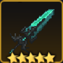
 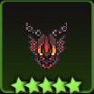
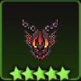
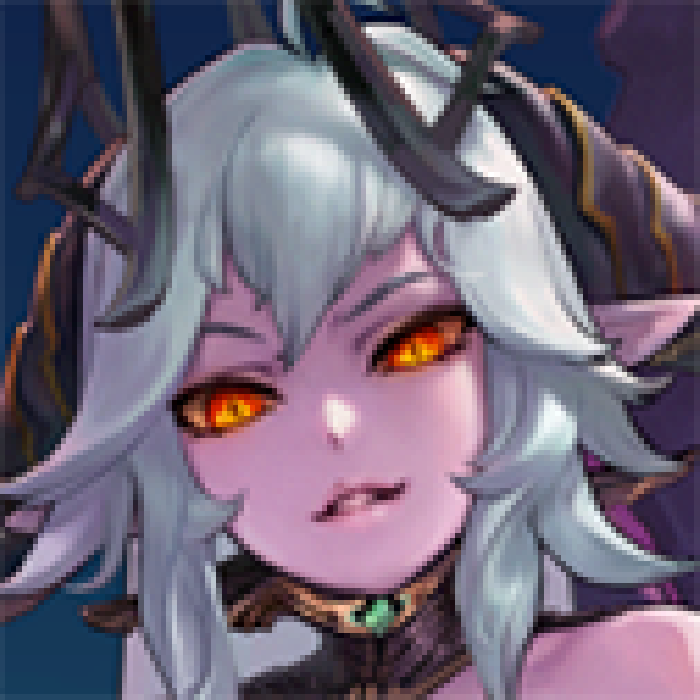
Build - Lilith
{Buff de grupo: +50% de ataque corpo a corpo}
Overlord
Garra das Trevas: Usa poderes sombrios para infligir dano aos inimigos. Espinho das Trevas: Lança matéria escura nos inimigos para infligir dano. Ao atingir, marca os inimigos com o emblema da Rainha Demônio, reduzindo sua Def por 6 segundos.
Garra das Trevas: Usa poderes sombrios para infligir dano aos inimigos. Espinho das Trevas: Lança matéria escura nos inimigos para infligir dano. Ao atingir, marca os inimigos com o emblema da Rainha Demônio, reduzindo sua Def por 6 segundos.
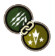
Golpe Fantasma
Estica a mão imbuída do poder da Rainha Demoníaca e arranha os inimigos para causar dano corpo a corpo. Deixa o inimigo no estado machucado. Dano da Habilidade: 290% DPS
Garra do demônio
A Mão do Mundo Demoníaco agarra o inimigo para infligir 390% do DPS. Se um inimigo marcado com o emblema da Rainha Demônio for atingido, restaura HP de todos os aliados em 20%.
Estica a mão imbuída do poder da Rainha Demoníaca e arranha os inimigos para causar dano corpo a corpo. Deixa o inimigo no estado machucado. Dano da Habilidade: 290% DPS
Garra do demônio
A Mão do Mundo Demoníaco agarra o inimigo para infligir 390% do DPS. Se um inimigo marcado com o emblema da Rainha Demônio for atingido, restaura HP de todos os aliados em 20%.
Demolição:
Ao usar Espinho das Trevas, aumenta o Atk em 20% por 6 segundos e inflige 100% de DPS adicional ao atingir.
Ao usar Espinho das Trevas, aumenta o Atk em 20% por 6 segundos e inflige 100% de DPS adicional ao atingir.
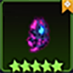
Arma EX - Queen's Grace:
Ativa um efeito de proteção, que reduz o dano recebido em 20%. Reduz o tempo de regeneração da habilidade Espinho das Trevas para 5 segundo(s) e a redução de defesa dos inimigos aumenta para 20%.
Ativa um efeito de proteção, que reduz o dano recebido em 20%. Reduz o tempo de regeneração da habilidade Espinho das Trevas para 5 segundo(s) e a redução de defesa dos inimigos aumenta para 20%.
Equipamentos Recomendados (Best in Slot)
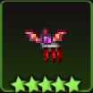
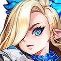
Build - Bianca
{Buff de grupo: +40% de chance de acerto crítico}
Cortador de Gelo:
Lança uma feroz onda de espada de gelo e causa dano à distância.
Lança uma feroz onda de espada de gelo e causa dano à distância.
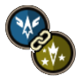
Campo de Pressão
Cria uma poderosa onda de gelo para infligir dano à distância. Coloca os inimigos em estado no ar. Dano da Habilidade: 150% DPS
Campo de Gelo
Causa dano à distância com 200% do DPS e aumenta sua própria Def em 50% por 10 segundos.
Cria uma poderosa onda de gelo para infligir dano à distância. Coloca os inimigos em estado no ar. Dano da Habilidade: 150% DPS
Campo de Gelo
Causa dano à distância com 200% do DPS e aumenta sua própria Def em 50% por 10 segundos.
Autoridade Nobre:
Quando atingido por inimigos, o Atk aumenta em 30% por 3 segundos e o Atk do inimigo diminui em 30%. Tempo de recarga de 6 segundos.
Quando atingido por inimigos, o Atk aumenta em 30% por 3 segundos e o Atk do inimigo diminui em 30%. Tempo de recarga de 6 segundos.
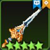
Arma EX - Astarte:
O alcance e a velocidade de ataque da habilidade Cortador de Gelo aumentam. Restaura HP em 15% do dano causado pela habilidade Cortador de Gelo.
O alcance e a velocidade de ataque da habilidade Cortador de Gelo aumentam. Restaura HP em 15% do dano causado pela habilidade Cortador de Gelo.
Equipamentos Recomendados (Best in Slot)
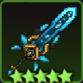


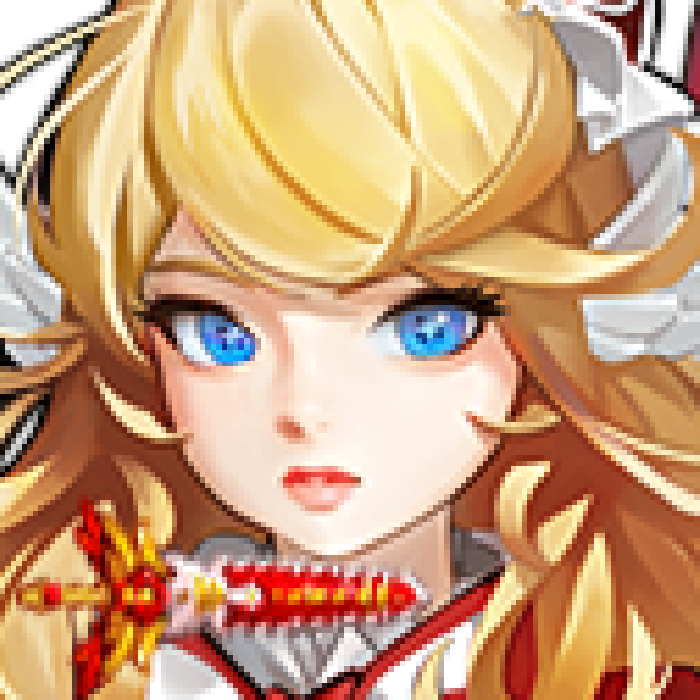
Build - Plitivice
{Buff de grupo: +50% de ataque de fogo}
Chama Imortal:
Dispara uma onda de espada de chama que penetra os inimigos.
Dispara uma onda de espada de chama que penetra os inimigos.
Chama de Purificação
Libera uma chama sagrada. Deixa os oponentes no estado machucado. Restaura o HP e remove os efeitos negativos dos aliados da chama sagrada. Dano da Habilidade: 285% DPS
Liberação de poder
Desperta temporariamente seu verdadeiro poder. Aumenta os danos infligidos pela Chama Imortal em 50% por 10 segundos. Aumenta a Defesa em 50% por 10 segundos.
Libera uma chama sagrada. Deixa os oponentes no estado machucado. Restaura o HP e remove os efeitos negativos dos aliados da chama sagrada. Dano da Habilidade: 285% DPS
Liberação de poder
Desperta temporariamente seu verdadeiro poder. Aumenta os danos infligidos pela Chama Imortal em 50% por 10 segundos. Aumenta a Defesa em 50% por 10 segundos.
Isenção:
Quando atingido por inimigos, anula o dano e o efeito de status de resistência com 20% de chance.
Quando atingido por inimigos, anula o dano e o efeito de status de resistência com 20% de chance.
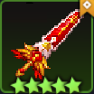
Arma EX - Proeminência:
Para cada inimigo atingido, inflige 30% de dano extra de DPS e restaura 1% de HP, com 60% de probabilidade. Ativa uma vez a cada 1 segundo(s).
Para cada inimigo atingido, inflige 30% de dano extra de DPS e restaura 1% de HP, com 60% de probabilidade. Ativa uma vez a cada 1 segundo(s).
Equipamentos Recomendados (Best in Slot)
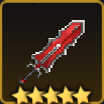


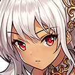
Build - Tinia
{Buff de grupo: +50% de dano à distância}
Arco e Flecha do Elfo do Deserto:
Flecha do Vento: Dispara três flechas de uma vez. Dispara uma flecha mais poderosa a uma distância maior com 30% de chance. Flecha do Deserto: Salta no ar e dispara uma flecha. Ao atingir, grava o símbolo de Tinia nos inimigos e diminui sua Def em 10%. Os símbolos de Tinia podem ser gravados até 2 vezes.
Flecha do Vento: Dispara três flechas de uma vez. Dispara uma flecha mais poderosa a uma distância maior com 30% de chance. Flecha do Deserto: Salta no ar e dispara uma flecha. Ao atingir, grava o símbolo de Tinia nos inimigos e diminui sua Def em 10%. Os símbolos de Tinia podem ser gravados até 2 vezes.
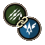
Chuva do Deserto
Chove flechas para os inimigos. Coloca os inimigos no estado machucado. Dano da Habilidade: 230% DPS
Flecha Tempestuosa
Dispara flechas que causam 300% do DPS. Flecha Tempestuosa causa 150% a mais de DPS pelo número de vezes que Tinia esculpe seu símbolo com Flecha do Deserto.
Chove flechas para os inimigos. Coloca os inimigos no estado machucado. Dano da Habilidade: 230% DPS
Flecha Tempestuosa
Dispara flechas que causam 300% do DPS. Flecha Tempestuosa causa 150% a mais de DPS pelo número de vezes que Tinia esculpe seu símbolo com Flecha do Deserto.
Mestre do Vento:
Ao usar Flecha do Deserto, a velocidade de ataque aumenta em 30% por 3 segundo(s). O dano causado pelos inimigos diminui em 30%.
Ao usar Flecha do Deserto, a velocidade de ataque aumenta em 30% por 3 segundo(s). O dano causado pelos inimigos diminui em 30%.
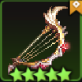
Arma EX - Sarnga:
O dano da Flecha do Deserto aumenta para 120% do DPS.
O dano da Flecha do Deserto aumenta para 120% do DPS.
Equipamentos Recomendados (Best in Slot)
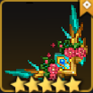


Build - Nari
{Buff de grupo: +50% de dano à distância}
Bead de Raposa:
Lança contas de raposa. No último tiro, lança uma Bead de Raposa aprimorada para diminuir a Def de longo alcance do inimigo em 20% por 3 segundos.
Lança contas de raposa. No último tiro, lança uma Bead de Raposa aprimorada para diminuir a Def de longo alcance do inimigo em 20% por 3 segundos.
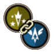
Bomba de Fogo da Raposa
Invoca disparos de raposa e atira continuamente. Coloca os inimigos no estado reduzido. Dano da Habilidade: 215% DPS
Refluxo Mágico da Raposa
Emite magia da raposa para infligir 300% do DPS e aumentar a chance de Acerto Crítico dos membros do grupo em 10% por 10 segundos.
Invoca disparos de raposa e atira continuamente. Coloca os inimigos no estado reduzido. Dano da Habilidade: 215% DPS
Refluxo Mágico da Raposa
Emite magia da raposa para infligir 300% do DPS e aumentar a chance de Acerto Crítico dos membros do grupo em 10% por 10 segundos.
Defesa da Cauda de Raposa:
Ao atingir, a Def aumenta em 8% por 8 segundos. Este efeito pode se sobrepor até 8 vezes.
Ao atingir, a Def aumenta em 8% por 8 segundos. Este efeito pode se sobrepor até 8 vezes.
Arma EX - Sage Beed:
Ao atacar, lança Bead de Raposa aprimorado com 40% de chance.
Ao atacar, lança Bead de Raposa aprimorado com 40% de chance.
Equipamentos Recomendados (Best in Slot)

Build - Garam
{Buff de partido: +50% de ataque de dano de água}
Magia:
Causa dano com um arco ou uma cesta e restaura o HP dos membros do grupo.
Causa dano com um arco ou uma cesta e restaura o HP dos membros do grupo.
Pássaro Trovão
Convoca um pássaro sagrado que domina o vento e a chuva causa dano aos inimigos que encontra. Deixa os inimigos no estado reduzio. Dano da Habilidade: 240% DPS
Tornado Espiritual
Dispara flechas espirituais que causam 475% do DPS.
Convoca um pássaro sagrado que domina o vento e a chuva causa dano aos inimigos que encontra. Deixa os inimigos no estado reduzio. Dano da Habilidade: 240% DPS
Tornado Espiritual
Dispara flechas espirituais que causam 475% do DPS.
Um com a Natureza:
Com um arco equipado, o Ataque aumenta em 20%. Com uma cesta equipada, a cura do ataque normal dobra.
Com um arco equipado, o Ataque aumenta em 20%. Com uma cesta equipada, a cura do ataque normal dobra.
Arma EX - Thousand Needles:
O dano dentro do alcance da Feitiçaria aumenta em 50%. Inflige 20% a mais de DPS quando atinge um único inimigo.
O dano dentro do alcance da Feitiçaria aumenta em 50%. Inflige 20% a mais de DPS quando atinge um único inimigo.
Equipamentos Recomendados (Best in Slot)


Build - Arabelle
{Buff de grupo: +50% de dano escuro}
Lançador de Granadas de Plasma:
Dispara uma granada de plasma.
Dispara uma granada de plasma.
Granada Saltante de Plasma
Atire em uma granada de plasma especial que quica no máximo 3 vezes. Coloca inimigos em estado machucado. Dano da Habilidade: 205% DPS
Onda de Choque de Plasma
Dispara plasma condensado que causa 310% de dano DPS.
Atire em uma granada de plasma especial que quica no máximo 3 vezes. Coloca inimigos em estado machucado. Dano da Habilidade: 205% DPS
Onda de Choque de Plasma
Dispara plasma condensado que causa 310% de dano DPS.
Buscador da Escuridão:
Ao atingir, a chance de Crítico e a velocidade de movimento aumentam em 25% por 3 segundos.
Ao atingir, a chance de Crítico e a velocidade de movimento aumentam em 25% por 3 segundos.
Arma EX - Genocide:
Ao atacar, dispara uma granada especial que inflige 75% a mais de dano de DPS a cada 3 segundos.
Ao atacar, dispara uma granada especial que inflige 75% a mais de dano de DPS a cada 3 segundos.
Equipamentos Recomendados (Best in Slot)
Build - Miya
{Buff de grupo: +90 de dano de habilidade}
Festival Fever:
Vento da Paixão: Sopra vento quente com um ventilador. Vento da Cura: Restaura HP dos membros do grupo à frente. Também remove efeitos negativos.
Vento da Paixão: Sopra vento quente com um ventilador. Vento da Cura: Restaura HP dos membros do grupo à frente. Também remove efeitos negativos.
Soprando as chamas
Jogar 3 espirais de chamas ardentes em três direções e depois os puxa novamente. coloca os inimigos no estado: no ar. Dano da habilidade: 280% de DPS
Festival de Chama:
Restaura 50% do HP de todos os membros do grupo e remove efeitos negativos. Aumenta a chance de Crítico dos membros do grupo em 20% por 5 segundos.
Jogar 3 espirais de chamas ardentes em três direções e depois os puxa novamente. coloca os inimigos no estado: no ar. Dano da habilidade: 280% de DPS
Festival de Chama:
Restaura 50% do HP de todos os membros do grupo e remove efeitos negativos. Aumenta a chance de Crítico dos membros do grupo em 20% por 5 segundos.
Brisa Quente
Ao usar Vento da Paixão, restaura 20% do HP do membro do grupo com menor HP.
Ao usar Vento da Paixão, restaura 20% do HP do membro do grupo com menor HP.
Arma EX - Shangri-La
No golpe de Vento da Paixão, inflige 20% a mais de dano de DPS. Caso haja um membro do grupo no caminho, restaura 10% do HP do membro do grupo com Heal.
No golpe de Vento da Paixão, inflige 20% a mais de dano de DPS. Caso haja um membro do grupo no caminho, restaura 10% do HP do membro do grupo com Heal.
Equipamentos Recomendados (Best in Slot)

Build - Eleanor
{Buff de grupo: +45% de dano de habilidade e +25% de dano de luz}
Aperjo:
Toca uma bela melodia para infligir dano aos inimigos e restaura de todos os HP aliados.
Toca uma bela melodia para infligir dano aos inimigos e restaura de todos os HP aliados.
Valsa Gloriosa:
Usa ondas sonoras para infligir dano a distancia aos Inimigos. deixa o inimigo no estado machucado. Dano da habilidade: 265% de DPS. Hino de Benção:
Com uma performance celestial, aumenta o Atk de todos os aliados em 30% por 5 segundos e reduz a resistência do tipo luz dos inimigos em 30%.
Usa ondas sonoras para infligir dano a distancia aos Inimigos. deixa o inimigo no estado machucado. Dano da habilidade: 265% de DPS. Hino de Benção:
Com uma performance celestial, aumenta o Atk de todos os aliados em 30% por 5 segundos e reduz a resistência do tipo luz dos inimigos em 30%.
Harmonia:
Se um herói do tipo Luz estiver no grupo, o dano recebido é reduzido em 20%. Para cada membro do grupo do tipo Luz, aumenta o Atq de todos os membros do grupo em 5%, até um máximo de 20%.
Se um herói do tipo Luz estiver no grupo, o dano recebido é reduzido em 20%. Para cada membro do grupo do tipo Luz, aumenta o Atq de todos os membros do grupo em 5%, até um máximo de 20%.
Arma EX - Benedctus:
Aumenta o dano do Arpeggio em 20%, e os inimigos atingidos pelo Arpeggio são gravados com notas por 3 segundos. Inimigos impressos com notas explodirão e sofrerão dano do arpeggio se o próximo arpeggio não atingir.
Aumenta o dano do Arpeggio em 20%, e os inimigos atingidos pelo Arpeggio são gravados com notas por 3 segundos. Inimigos impressos com notas explodirão e sofrerão dano do arpeggio se o próximo arpeggio não atingir.
Equipamentos Recomendados (Best in Slot)

Build - Gabriela
{Buff de grupo: +40% de aceto critico}
Som do céu:
Lança uma flecha e dispara uma onda sonora. Reduz a resistência a tipo de luz em 20% por 3 segundos para o inimigo atingido pelo último ataque.
Lança uma flecha e dispara uma onda sonora. Reduz a resistência a tipo de luz em 20% por 3 segundos para o inimigo atingido pelo último ataque.
Santuario:
Convoca um santurario sagrado. deixa os inimigos no estado caido. dano da habilidade: 300% de DPS
Descendente dos Anjos:
Desencadeia um relâmpago sagrado para infligir 300% do DPS. Restaura 30% do Heal para o HP de todos os membros do grupo e remove todos os efeitos negativos.
Convoca um santurario sagrado. deixa os inimigos no estado caido. dano da habilidade: 300% de DPS
Descendente dos Anjos:
Desencadeia um relâmpago sagrado para infligir 300% do DPS. Restaura 30% do Heal para o HP de todos os membros do grupo e remove todos os efeitos negativos.
Cantos da Vitoria:
No Som do sucesso do Céu, restaura 30% do HP do membro do grupo com menor HP e aumenta o Atq em 30% por 5 segundo(s). Ativa uma vez a cada 5 segundo(s).
No Som do sucesso do Céu, restaura 30% do HP do membro do grupo com menor HP e aumenta o Atq em 30% por 5 segundo(s). Ativa uma vez a cada 5 segundo(s).
Arma EX - magnificat:
No sucesso de Som do Céu, inflige 30% de DPS a cada 2 segundos e reduz imediatamente a resistência do tipo luz. Restaura o HP dos membros do grupo no Santuário em 100% do Cura.
No sucesso de Som do Céu, inflige 30% de DPS a cada 2 segundos e reduz imediatamente a resistência do tipo luz. Restaura o HP dos membros do grupo no Santuário em 100% do Cura.
Equipamentos Recomendados (Best in Slot)


Build - Veronica
{Buff de grupo: +90% de dano da habilidade}
Autoridade Divina da Arcipriestessa:
Punição: Libera poder sagrado para infligir dano a inimigos de médio alcance. Benção do Escolhido: Aumenta o Multiplicador de Crítico dos membros próximos do grupo em 100% por 4 segundos.
Punição: Libera poder sagrado para infligir dano a inimigos de médio alcance. Benção do Escolhido: Aumenta o Multiplicador de Crítico dos membros próximos do grupo em 100% por 4 segundos.
Estigma Divino:
Causa danos aos inimigos ao redor do alvo, iluminando-os com poder sagrado. o feixe explode após um periodo de tempo, causando dano e deixando-os no estado no ar. dano de habilidade 280% de DPS
Benção do oceano:
Inflige 250% do DPS aos inimigos e cria um escudo de água de 20% ao redor de todos os membros do grupo.
Causa danos aos inimigos ao redor do alvo, iluminando-os com poder sagrado. o feixe explode após um periodo de tempo, causando dano e deixando-os no estado no ar. dano de habilidade 280% de DPS
Benção do oceano:
Inflige 250% do DPS aos inimigos e cria um escudo de água de 20% ao redor de todos os membros do grupo.
Recarga de poder sagrado
Aumenta o dano e diminui o dano recebido, em 50% da velocidade de regeneração da habilidade da arma.
Aumenta o dano e diminui o dano recebido, em 50% da velocidade de regeneração da habilidade da arma.
Arma EX - Messias:
A Benção do Escolhido inflige 150% de dano DPS nos inimigos e restaura 15% do HP dos membros do grupo.
A Benção do Escolhido inflige 150% de dano DPS nos inimigos e restaura 15% do HP dos membros do grupo.
Equipamentos Recomendados (Best in Slot)